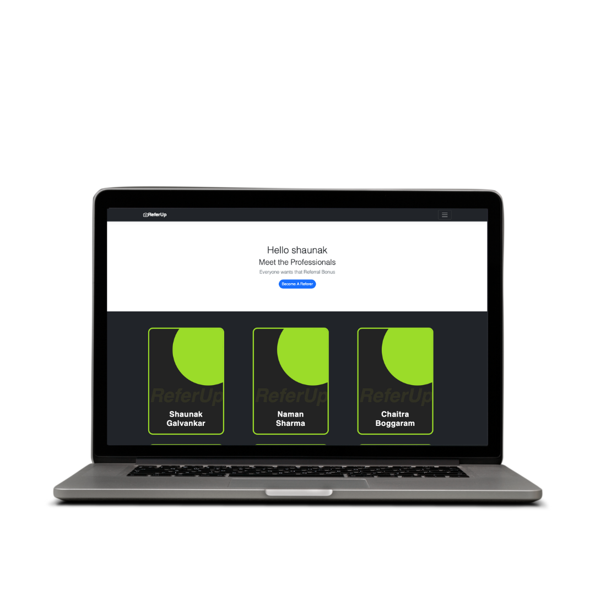

April 2020 - June 2021
In this comprehensive project, I conducted Sentiment Analysis on Twitter, leveraging Natural Language Processing (NLP) and Bidirectional Long Short-Term Memory (LSTM) models from TensorFlow. The primary objective was to predict presidential election outcomes based on Twitter data, focusing on prominent figures such as Donald Trump and Joe Biden, the key contenders in the 2020 elections.

Classifier employed to distinguish real from fake information. Applied it to identify major misinformation spreaders among highly followed accounts, addressing the issue of misinformation on social media.
March 2022 - December 2022

This project delves into forecasting the dynamics of Tuberculosis (TB), Influenza, and Respiratory Syncytial Virus (RSV) in India. The project also incorporates outlier correction techniques to enhance data accuracy, especially during significant health events like the COVID-19 wave.
September 2022 - December 2022

Development of a dynamic referral platform tailored for students seeking employment, fostering connections with alumni from the same university for potential job referrals.
Significantly improved user engagement by revamping the website’s frontend with Flask components, resulting in a noteworthy 25% increase in user interest and interaction metrics.
Implemented AWS S3 integration, enabling users to seamlessly upload resumes and connect with alumni, contributing to a substantial 30% upswing in overall user engagement. This initiative aimed to streamline processes and enhance the platform’s effectiveness in facilitating career connections.
Implemented AWS CloudWatch to monitor and measure user interactions on the website, establishing and optimizing thresholds for performance metrics. This integration allowed for real-time tracking of key indicators, ensuring proactive identification and resolution of potential issues while maintaining optimal system performance.
This project executed a comprehensive Spark-based data analysis and clustering project, emphasizing various aspects of Spark functionality. The project included the configuration of Spark applications through the QuestionOne function, focusing on parameters such as executor memory, driver memory, and result size. The project involved a comprehensive analysis of large-scale network traffic data, utilizing a combination of Pandas, Spark SQL, Kafka, and ML clustering.
August 2023 - October 2023
This project delves into Uber's dataset, utilizing a diverse toolkit such as AirFlow, Python, BigQuery and Azure to extract valuable insights and create an ETL to optimized query processing and data retrieval. Which also allowed to revealing patterns, trends, and correlations effectively.

Project in Development: A Convolutional Neural Network (CNN) is currently being employed to harness the PyTorch framework for the meticulous analysis of Radio X images, with a specific focus on predicting the likelihood of patients developing cancer. The project has been deployed using AWS and Azure, and a front-end has been developed with Flask.